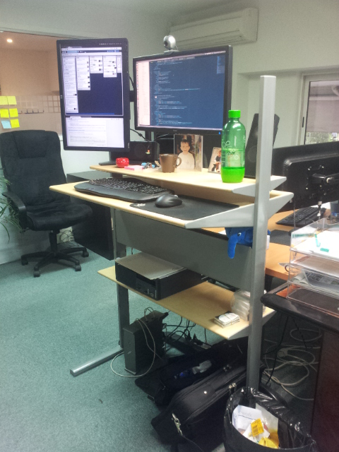
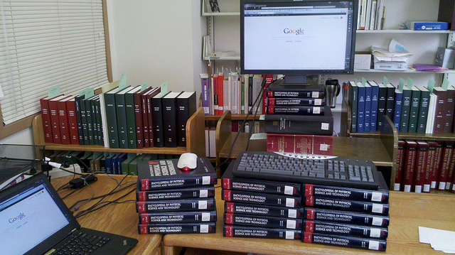
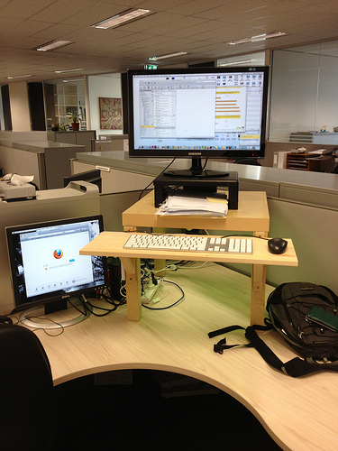
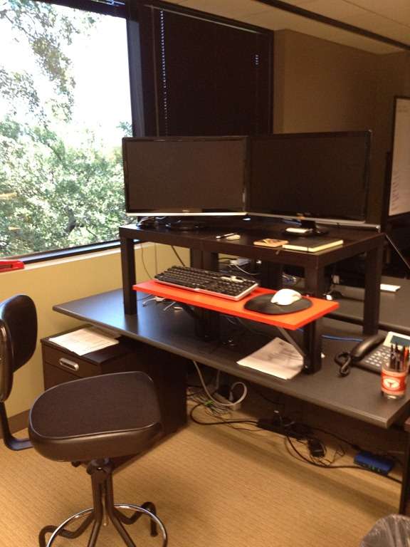

Travailler
sur ses deux pieds
Pierre Martin - @pierremartin

Standing Desk

2 principes
DIY
HowtoGeek: 15 Ideas to Buy or Build Your Perfect Standing Desk
Standesk 2200
S'toi le problème !

À vous de jouer !

Merci
real34.github.io/slides
@pierremartin